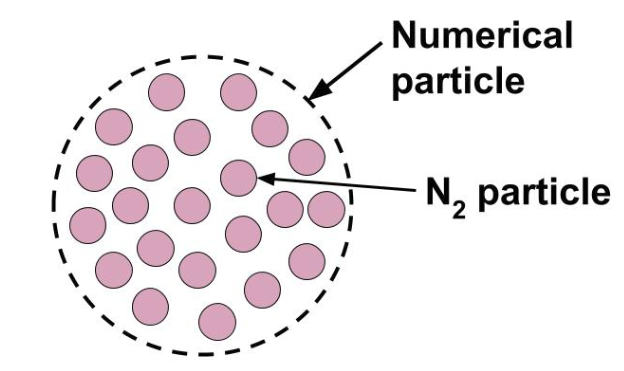
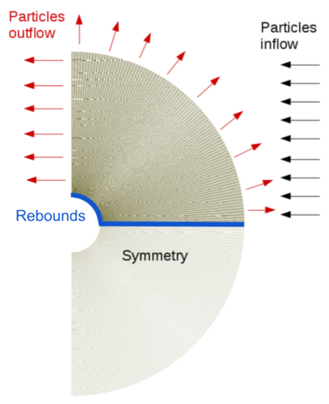
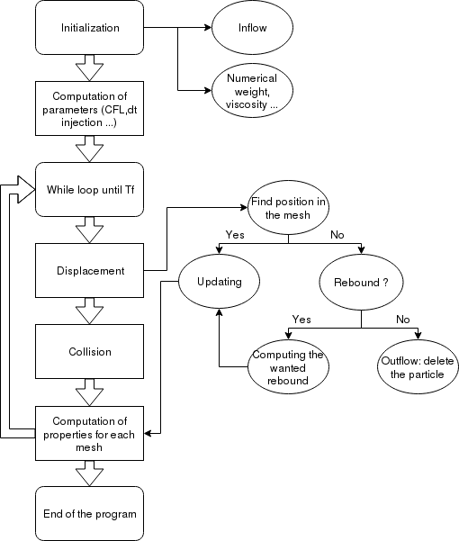
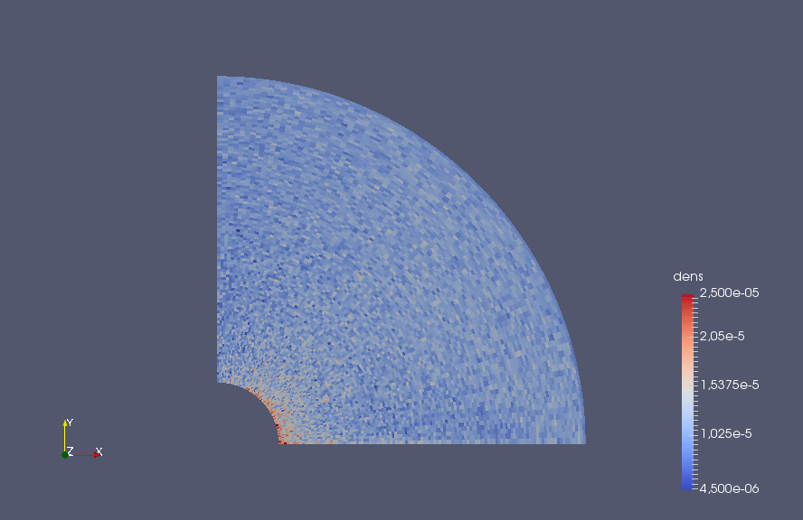
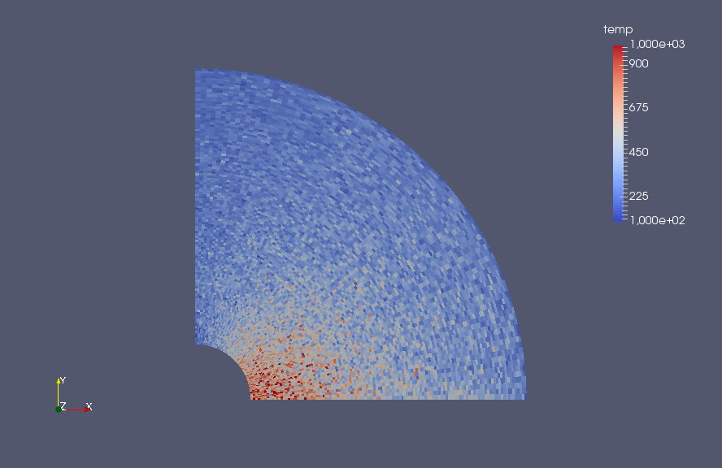
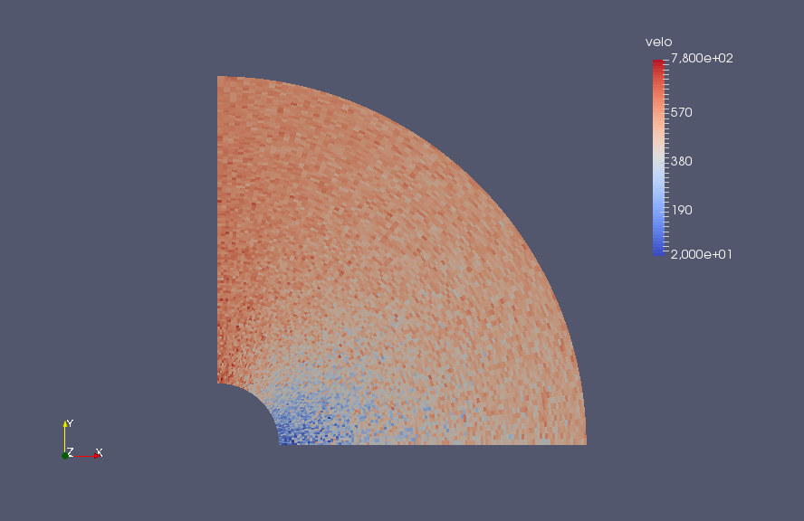

Rentrée atmosphérique d'un objet en raréfié
Présentation du projet

Introduction et contexte
Présentation du problème et de ses enjeux
Dans le cadre d'une rentrée atmosphérique nous avons résolu l'équation de Boltzmann afin d'étudier la trajectoire des particules autour de la navette en mouvement.
Nous avons dû étudier plusieurs aspects du problème, notamment : $1+sin(x)^2+3$
Théorie
Présentation de la littérature et du cas test
Equation de Boltzmann
L'équation de Navier-Stokes n'étant pas valable dans le cas considéré, une méthode particulaire a été utilisée. Dans cette approche du problème, le fluide est représenté par un très grand nombre de particules de gaz. Pour décrire le comportement de ces particules, on introduit la fonction de distribution f, qui est la densité de masse de gaz par unité de volume. Ainsi, intégrée sur un volume, cette fonction donne la masse de gaz présent dans ce volume :
\[\int_{V_x} \int_{v\in R^3} f(t,x,v) = \text{number of particles in the volume}~V_x \]
On peut montrer que le mouvement des particules est décrit par l'équation de Boltzmann :
\[\partial_tf+v\nabla_x f=Q(f,f)\]
avec v la vitesse de la particule et Q est appelé opérateur de collision.
Ainsi, on peut remarquer que si l'on ne considère pas l'opérateur de collision, l'équation se transforme en une équation de propafation classique :
\[\partial_tf+v\nabla_x f=0\]
L'ajout de l'opérateur Q permet donc de prendre en compte les collisions entre les particules. Il existe une expression précise de l'opérateur de collision. Mais celui-ci rend l'équation complexe à résoudre numériquement. Il a donc été décidé d'utiliser un modèle permettant de simplifier cet opérateur : le modèle BGK.
Modèle BGK
Il a été démontré (cf cours Luc Mieussens) que la répartition des particules d'un gaz va tendre vers un état d'équilibre représenté par une distribution dite Maxwellienne. La distribution Maxwellienne est une fonction gaussienne centrée sur u et d'écart type RT, dont voici l'expression :
\[M(t,x,v)=\frac{\rho}{\sqrt{2 \pi RT}} exp\left(\frac{(u-v)^2}{2RT}\right)\]
avec $\rho$ la densité du fluide, R la constante des gaz parfait (Ou plutôt de notre gaz ?), u la vitesse moyenne du fluide, T la température et $\tau$ le temps caractéristique du phénomène de convergence vers l'état d'équilibre.
Ainsi, la convergence de la fonction de distribution vers cette Maxwellienne est la base du modèle BGK. En effet, en posant comme opérateur de collision :
\[Q(f,f)=\frac{1}{\tau}(M(f)-f)\]
on obtient ainsi la convergence de la fonction de répartition vers la Maxwellienne.
Le modèle ainsi construit est plus simple à résoudre numériquement que le problème de départ et permet tout de même de modéliser le comportement d'un gaz raréfié avec une bonné précision.
On définit un opérateur de Boltzmann simplifié pour le model : l'opérateur BGK $Q$ définit ci-dessous.
A l'état d'équilibre, la distribution des vitesse tends vers la Maxwellienne :
On note $\rho$ la densité du fluide, $R$ la constance du gaz, $u$ la vitesse moyenne, $T$ la température, $M$ une mawxellienne et $\tau$ le temps caractéristique décrivant le problème.
Particules numériques et collisions
La simulation de chacune des particules du domaine engendrerait, malgrè un gaz raréfié, un temps de calcul considérable. Ainsi on introduit la notion de particule numérique pour notre modèle. Chaque particule numérique représente un ensemble de particules de N2. Elle sont représentées par un poids numérique $\omega_i$ :
\[\omega_i =\frac{\rho V_M}{N}\]
Ce poids numérique dépend de plusieurs paramètres de la maille : $N$ représente le nombre de particles présentent dans la maille, $\rho$ sa densité et $V_M$ son volume.
 Chaque particule numérique est implémentée avec sa propre vitesse initiale. Deux particules peuvent donc entrer en collision ce qui modifiera leur vitesse. Il est nécessaire de simuler ce phénomène afin de prendre en compte son impact sur les propriétés de l'écoulement. Pour simplifier le problème et gagner en temps de calcul, les collisions entre particules ont été simplifiées. En effet, il est compliqué de connaître avec exactitude les trajectoires de toutes les particules pour prendre en compte leurs collisions.
Il a donc été choisi d'utiliser un modèle probabiliste : les particules qui collisionnent sont choisies aléatoirement. Cela facilite grandement la résolution. En effet, à chaque pas de temps, les particules se déplacent sans interaction les unes avec les autres, puis de manière probabiliste sont effectuées les collisions. Ainsi, il n'y a pas corrélation entre le déplacement des particules et les collisions, ce qui simplifie la résolution.
De plus, lors d'une collision, la grandeur qui est impactée est la vitesse des particules. Les nouvelles vitesses des particules ayant collisionnées seront elles aussi déterminées de façon probabiliste. La nouvelle vitesse sera déterminée selon une maxwellienne centrée autour de la vitesse de la particule avant le choc. (C'est bien ça ? Ou autour de la vitesse moyenne dans la maille ?)
Néanmoins, pour être au plus proche des phénomènes physiques, certains paramètres doivent être fixés de la manière suivante :
- Les collisions ont lieu tout les 10 pas de temps
- Dans chaque maille, la proportion de particules qui collisionnent est de 10 %
Lors des collisions, la nouvelle vitesse des particules étant déterminée de manière probabiliste, la vitesse dans la maille ne sera pas la même avant et après les collisions. Ceci ne correspond pas à la réalité physique puisque qu'il n'y a pas conservation de la quantité de mouvement. Ainsi, pour conserver la quantité de mouvement, une transformation linéaire va être faite sur les vitesses des particules. (toutes les particules de la maille ou seulement celles qui ont collisionnées ?)
L'objectif de la transformation linéaire est de modifier la vitesse après collision de façon à conserver la quantité de mouvement ainsi que la température dans la maille. On note $X_i$ et $Y_i$ les vitesses de chacune des particules i. La nouvelle vitesse après transformation va s'écrire $Y'_i=aY_i+b$ avec a et b à déterminer.
La conservation de la quantité de mouvement sur l'ensemble des particules d'une maille donne donc :
\[E(Y')=aE(Y)+b=E(X).\]
De même, la conservation de la température dans la maille donne :
\[Var(Y')=a^2 Var(Y)=Var(X).\]
Le lien entre la variance de la vitesse des particules et la température dans la maille est mis en évidence dans la partie suivante.\\
Ainsi, avec ces deux conditions, on obtient les coefficients a et b. Cela permet ensuite de calculer des vitesses après impact qui soient cohérentes avec le modèle physique.
Calcul des propriétés physiques dans les mailles
Une fois les positions des particules mise à jour, la masse volumique, la vitesse moyenne ainsi que la température de chaque maille peuvent être elles aussi actualisées. Pour ce faire, il existe des formules permettant de faire le lien entre ces grandeurs et le nombre de particule par maille. Ainsi, la masse volumique s'écrit :
\[\rho_M=\sum \limits_{i \in M}\frac{\omega_i}{V_M},\]
avec $V_M$ le volume de la maille et $\omega_i$ le poids numérique de chacune des particules. Dans le cas présent, le poids numérique est identique pour toutes les particules.\\ La vitesse moyenne dans les maille s'écrit simplement :
\[u_M=\frac{1}{n_{part}}\sum \limits_{i \in M} v_i,\]
avec $n_part$ le nombre de particules dans la maille et $v_i$ les vitesse de chacune des particules. Une fois cette vitesse moyenne obtenue, on peut ainsi calculer la température grâce à la formule suivante :
\[T_M=\frac{1}{3Rn_{part}}\sum \limits_{i \in M} (v_i-u_M)^2,\]
avec R la constante des gaz parfaits.
On voit ici de manière assez clair le lien décrit précédemment entre la variance de la vitesse des particules et la température d'une maille.\\
Ainsi, le lien est fait entre les particules et les propriétés physiques dans chacune des mailles. Ce sont ces propriétés (notamment la température) qui constituent l'objectif final de notre code.
Domaine étudié
 On réalise une modélisation en deux dimensions. Le domaine étudié correspond à une demi sphère autour de l'objet en rentrée atmosphérique. Il comprend une symétrie selon l'axe x, ainsi on peut faire une simplification et ne considérer que la partie supérieure (ici en gris) pour la simulation. La condition de symétrie sera retranscrite à travers des rebonds spéculaires. En effet lorsqu'une particule passe dans la partie inférieure symétrique, on peut considérer qu'une autre rentre par ce même coté. On se place dans le référentiel de la navette, ainsi le domaine est fixe et on considère les particules en mouvement. Un flux de particule vient de la droite du domaine, où de nouvelles particules numériques sont introduites à chaque temps caractéristique $\tau$. Leurs vitesses sont initialisées selon une Maxwellienne autour de la vitesse de la navette. Ainsi on a une vitesse moyenne du flux d'entrée de Mach 2 suivant la direction $-x$. On considère une température au bord de 200K. Les particules entrent par un bord libre par où elles peuvent également sortir. Le bord situé à la gauche du domaine est également une condition de sortie. Une condition de type mur est fixée au bord de la navette, où les particules rebondiront à son contact.
Conditions de rebonds
On pose deux types de rebonds.
Rebonds spéculaires
Les rebonds spéculaires sont des rebonds "parfaits". On considère la paroi comme completement lisse, ainsi l'angle réflechit est l'inverse de l'angle d'incidence.
Rebonds maxwelliens
Dans la réalité la paroi de la navette n'est pas lisse, elle présente des défaults. On ne peut pas prévoir exactement les angles de réflexions. En effet ils dependent de multiples facteurs physiques et chimiques. Pour remédier à cela on ajoute un caractère aléatoire aux rebonds, ainsi on implémente des rebonds dépendant d'une gaussienne autour de la vitesse d'incidence.
Modèle numérique
Présentation du modèle et de son optimisation
Maillage et nombre d'éléments
Le maillage est cartésien. Dans un premier temps le travaille s'est réalisé sur un maillage contenant 1 131 quadrilatère, puis une fois le code validé les résultats ont été obtenus à partir d'un maillage contenant 10 591 éléments. La complexité du code, bien qu'elle dépendent du nombre de mailles, dépends surtout du nombre de particules présentes dans le domaine. Ainsi nos calculs se sont réalisés sur des domaines contentant jusqu'à 600 000 particules.
Architecture du code
Dans cette partie, la structure globale du code sera présentée de manière simplifiée afin d'en faciliter la compréhension.
Initialisation
Après la lecture du maillage et la construction des différentes classes géométriques (Edges, Quad ...), le programme doit être initialisé. Certains paramètres importants doivent être calculés tels que les surfaces correspondant à chaque maille, les voisins de chaque maille, le poids numérique $\omega_i$, ou encore la viscosité. De plus, le domaine est initialement vide, un "inflow" de particules doit donc être créé une première fois.
Calcul du pas de temps
Afin que le modèle soit stable et cohérent avec la réalité, le pas de temps doit vérifier deux conditions différentes :
-
La condition CFL :
\[dt\leq \frac{1}{2}\frac{dx_{min}}{Ma\sqrt{\gamma R T}}\]
où $dx_{min}$ est la taille de la plus petite arête du maillage, $Ma$ le nombre de Mach, $R$ la constante du gaz et $T$ la température initiale.
Cette condition doit être respectée pour que lors de l'intervalle $dt$, une particule ne parcourt pas en moyenne plus de la moitié de la longueur d'une maille. Afin que cette condition soit largement respectée, il a été choisi de prendre:
\[ dt_{CFL} = \frac{1}{5}\frac{dx_{min}}{Ma\sqrt{\gamma R T}} \]
-
La condition sur les collisions:
\[ \frac{dt}{\tau} \leq 0.1 \]
sachant que le temps caractéristique est obtenu par:
\[ \tau = \frac{\mu(T)}{p}= \frac{\mu(T)}{\rho R T} \]
avec $\mu(T)$ une loi de viscosité dépendant de la température initiale.
Pour l'initialisation, le pas de temps est fixé à:\[ dt_{\tau}=0.1\tau\]
Le pas de temps est ensuite fixé en prenant le minimum des deux $dt$ obtenus:
\[ dt=min(dt_{CFL},dt_{\tau}) \]
Si le minimum des deux est le $dt_{CFL}$, alors le coefficient $\frac{dt}{\tau}$ doit être calculé puis stocké en vu du calcul sur les collisions.
Une fois ce dernier paramètre fixé, le programme peut rentrer dans la boucle en temps.
Calcul des déplacements
Cette fonction calcule, pour chaque particule, les coordonnées de la nouvelle position de celle-ci suite à un déplacement durant un pas de temps $dt$. Par la suite, divers autres fonctions sont appelées afin de mettre à jour la localisation dans le maillage ainsi que, si besoin, les vitesses.
Pour commencer, une première fonction teste si la particule se trouve toujours dans le domaine d'étude. Si elle y est, sa position est mise à jour dans le maillage (la particule est sauvegardée dans la maille correspondante), sinon une deuxième fonction est appelée. Celle-ci permet de vérifier si la particule est sortie du domaine par un bord de condition "outflow" ou si elle devrait rebondir sur le bord de condition de symétrie ou sur le bord de condition "wall" correspondant à la navette. Si la particule est sortie par le bord "outflow", elle est supprimée car elle n'aura plus d'influence sur notre domaine de calcul, sinon, la particule doit rebondir et une troisième fonction est appelée afin de calculer sa nouvelle position et sa nouvelle vitesse. Enfin, sa localisation dans le maillage est mise à jour.
Lors de cette succession d'appel de fonctions, certains cas sont traités différemment et avec plus de précautions. En effet, les mailles possédant deux bords différents présentent des cas différents:
- la maille possédant un bord avec condition de symétrie et un bord avec condition "wall" peut donner lieu à deux rebonds différents pour la particule.
- la maille possédant un bord avec condition de symétrie et un bord avec condition "outflow" peut donner lieu à un rebond et/ou une sortie de la particule.
- la maille possédant un bord avec condition "wall" et un bord avec condition "outflow" peut donner lieu à un rebond et/ou une sortie de la particule.
Pour terminer, le respect de la condition CFL est testé avec chaque vitesse correspondante pour chaque particule. Si jamais elle n'est pas respectée, alors le pas de temps est divisé et les calculs sont réalisé à nouveaux. Cette opération peut avoir lieu jusqu'à dix fois, si jamais la condition n'est toujours pas respectée, la particule est supprimée. Ceci arrive de temps en temps pour des particules avec une vitesse vraiment très élevée (due à la génération de vitesse selon une loi de probabilité).
Collisions
Une fois toutes les positions mise à jour, le programme s'intéresse aux collisions dans chaque maille comme expliqué précédemment. Si jamais une particule collisionne, sa vitesse est mise à jour suivant la maxwellienne autour de la vitesse moyenne dans la maille.
Calcul des paramètres
A la fin de chaque itération, la densité, la vitesse ainsi que la température sont calculés dans chaque maille à l'aide des formules présentées précédemment. De plus, en vu de l'itération suivante, un nouvel "inflow" de particules est créé.
Lorsque le temps final est atteint, c'est la fin du programme.
Optimisation
Séquentielle
La première optimisation à réaliser a été sur le code séquentiel. Pour cela on a tout d'abord cherché à minimiser les stockages au sein du code. L'outil -gprof a été utilisé afin de déterminer quelle fonction du code était le plus chronophage.
Parallélisation
Résultats
Présentation des résultats obtenus
Validations
Validation sans les collisions

Afin de valider le modèle sans les collisions, le code a été exécuté sur un maillage plus raffiné et jusqu'à ce que la solution semble stabilisée. Les résultats sont présentés sur les figures ci-contre pour la densité, la vitesse et la température.
Pour la densité, on remarque une hausse juste à l'avant de la navette due à l'agglomération de particules. Dans le reste du domaine la densité est globalement uniforme et de même valeur qu'initialement. En ce qui concerne la température, on remarque un fort échauffement à l'avant de la navette, jusqu'à plus de 1000 K, alors que la température à la condition "inflow" est de 200 K.

Pour la vitesse, on peut observer qu'elle est très ralentie, voir quasi nulle, juste devant la navette alors qu'elle semble être plus importante sur le côté de la navette.

Ces résultats sont proches de ceux à quoi on pouvait s'attendre et sont réalistes.
Validation avec les collisions
Avec un maillage identique au précédent, le code a été exécuté en tenant compte des collisions. Afin d'avoir un visuel plus lisse de la solution, un moyennage des différentes propriétés affichées a été réalisé une fois la stabilisation de la solution. Les résultats sont présentés à nouveau sur les figures ci-contre.
Pour la densité, on remarque également une hausse juste à l'avant de la navette due à l'agglomération de particules et une densité homogène ailleurs. La température est proche des 1000 K à l'avant de la navette et proche des 200 K ailleurs. Enfin la vitesse est quasi nulle devant la navette et plus élevée sur le bord de celle-ci. Encore une fois ces résultats semblent physiquement explicables et proche de ce à quoi on pouvait s'attendre. Néanmoins, il aurait fallu comparer les valeurs obtenus avec des valeurs mesurées expérimentalement afin de les valider précisément.